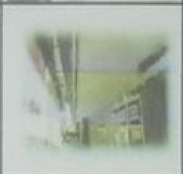

Subang jaya
adalah salah satu kelurahan di Kecamatan Cikole, Kota Sukabumi, Jawa Barat, Indonesia. Secara geografis Kecamatan Cikole terletak tengah pusat Kota Sukabumi dan merupakan Pusat Pemerintahan Kota Sukabumi. Kecamatan Cikole terdiri dari 6 (enam) wilayah Kelurahan, 68 RW dan 337 RT. Enam Kelurahan tersebut meliputi : Kelurahan Gunungparang, Kelurahan Selabatu, Kelurahan Cikole, Kelurahan Kebonjati, Kelurahan Cisarua dan Kelurahan Subangjaya. Luas wilayah Kecamatan Cikole + 701,1010 Ha merupakan dataran tinggi. Letak Kecamatan Cikole yang strategis merupakan wilayah yang sangat diminati oleh para pebisnis dan pengusaha untuk pengembangan usaha karena didukung oleh sarana infrastruktur yang cukup menunjang, yang memang secara ekonomis sangat menguntungkan karena dapat meningkatkan tarap perekonomian masyarakat baik sektor jasa, perdagangan maupun sektor lainnya. Potensi pengembangan wilayah di Kecamatan Cikole sesuai dengan Visi Kota Sukabumi berupaya untuk memberikan andil terutama dalam pengembangan kualitas pelayanan bidang pendidikan, kesehatan dan perdagangan sehingga penataan Rencana Tata Ruang Wilayah Kota Sukabumi sesuai RT RW pada tahun 2011 – 2031 sebagaimana potensi pengembangan dibagi menjadi 5 (lima) zona atau Sub Wilayah Kota (SWK) yang terdiri dari Kawasan Perdagangan dan Jasa termasuk Kecamatan Cikole sebagian besar ada di SWK I yaitu Kawasan Pendidikan dan Perkantoran dan sebagian lagi SWK IV yaitu Kawasan Perumahan dan Pertanian.
Struktur Organigram
 |
Kegiatan
| REKAPITULASI KEGIATAN PROGRAM PEMBERDAYAAN RUKUN WARGA (P2RW) YANG TELAH DILAKSANAKAN KELURAHAN SUBANGJAYA KECAMATAN CIKOLE KOTA SUKABUMI TAHUN ANGGARAN 2019 | ||||||
| NO | KELURAHAN | RW | RENCANA KEGIATAN | KETERANGAN | ||
| SUDAH SELESAI | SEDANG PROSES | BELUM | ||||
| 1 | 2 | 3 | 4 | 5 | 6 | 7 |
| 1 | Subangjaya | 01 |  |
 |
TPT (Penadulan) RT.003 RW.001 | |
| 2 | Subangjaya | 02 |  |
 |
 |
Rehabilitasi (RBT) Pengerasan Jalan Lingkunagn RT.004 RW.02 |
| 3 | Subangjaya | 02 |  |
 |  |
RUTILAHU (Rumah Tidak Layak Huni Ibu Zenab Fatimah) RT.005 RW.02 |
| 4 | Subangjaya | 02 |  |
 |
 |
Keranda Mayat (RW.02) |
| 5 | Subangjaya | 03 |  |
 |
 |
Pembangunan Pos Serbaguna (RT.05 RW.03) |
| 6 | Subangjaya | 04 |  |
 |
 |
Pengadaan Kursi Plastik, Sound System (RW 04) dan Pengadaan Kebutuhan Pos Yandu (RW.04) |
| 7 | Subangjaya | 05 |  |
 |
 |
Rehabilitas Sekretariat RW 05, RBT dan Talud Penyangga Jalan |
| 8 | Subangjaya | 05 |  |
 |
 |
Sarana Olah Raga Pemuda (RW 05) |
| 9 | Subangjaya | 06 |  |
 |
 |
Pengadaan Karpet Masjid Jami (RT 03) |
| 10 | Subangjaya | 06 |  |
 |
 |
Pengadaan TPSS (RW 06) |
| 11 | Subangjaya | 07 |  |
 |
 |
Pem. Saluran Air, dan Rehabilitasi RBT (RT 01) |
| 12 | Subangjaya | 07 |  |
 |
 |
Rehabilitasi RBT (RT 03) |
| 13 | Subangjaya | 08 |  |
 |
 |
Pembuatan TPSS, Pemasangan Pavingblok Jalan Gang. |
| 14 | Subangjaya | 08 |  |
 |
 |
Perbaikan Drainase dan Plat Decter |
| REKAPITULASI USULAN KEGIATAN P2RW KELURAHAN SUBANGJAYA KECAMATAN CIKOLE | |||||||
| NO | RW | NO REKENING | NAMA KETUA RW | NO HP | JUMLAH DANA P2RW (RP) | KEGIATAN YANG DIBIAYAI P2RW | KETERANGAN |
| 1 | 1 | 0059902296100 | LINDA HERLIANA | 085793728356 | Rp 20.000.000.00 | TPT(PENALUDAN)RT.03,01 | |
| 2 | 2 | 0059960601100 | TATANG SUPRIATNA,S.Ip | 085721084232 | Rp 22.000.000.00 | Pengerasan Jalan Lingkungan | Jara 2 TK kelurahan |
| 3 | 2 | 0059960601100 | TATANG SUPRIATNA,S.Ip | 085721084232 | Rp 0.00 | RUTILAHU (Rumah Tidak Layak Huni) | |
| 4 | 2 | 0059960601100 | TATANG SUPRIATNA,S.Ip | 085721084232 | Rp 0.00 | KerandaMayat | |
| 5 | 3 | 0059790986100 | YOSEP SUMARNO | 085793435301 | Rp 23.500.000.00 | Pembangunan Pos Serbaguna | Juara 1 Tk kelurahan |
| 6 | 3 | 0059790986100 | YOSEP SUMARNO | 085793435301 | Rp 0.00 | Pengadaan Keranda Mayat | |
| 7 | 3 | 0059790986100 | YOSEP SUMARNO | 085793435301 | Rp 0.00 | Pengadaan Leptop | |
| 8 | 4 | 0060008795100 | IKHSAN FIRDAUS,SH | 085624157276 | Rp 20.000.000.00 | Pengadaan Kursi Plastik, Sound System dan | |
| 9 | 4 | 0060008795100 | IKHSAN FIRDAUS,SH | 085624157276 | Rp 0.00 | Pengadaan Kebutuhan Pos Yandu | |
| 10 | 5 | 0060224080100 | ABDUL AZIZ | 085723790969 | Rp 20.000.000.00 | Rehabilitasi Sekretariat RW.05 | |
| 11 | 5 | 0060224080100 | ABDUL AZIZ | 085723790969 | Rp 0.00 | Sarana Olah Raga Pemuda | |
| 12 | 5 | 0060224080100 | ABDUL AZIZ | 085723790969 | Rp 0.00 | RBT dan Talud Penyangga Jalan | |
| 13 | 6 | 0059772473100 | RIDWAN FIRMANSYAH,SS | 085759403051 | Rp 20.000.000.00 | Pengadaan Karpet Masjid Jami | |
| 14 | 6 | 0059772473100 | RIDWAN FIRMANSYAH,SS | 085759403051 | Rp 0.00 | TPSS | |
| 15 | 7 | 0060774048100 | GUN GUN GUNAWAN | 081572872071 | Rp 20.000.000.00 | Pem.Saluran Air / Plat Decker | |
| 16 | 7 | 0060774048100 | GUN GUN GUNAWAN | 081572872071 | Rp 0.00 | RBT (Pengerasan Jalan Lingkungan)0 | |
| 17 | 8 | 0060046697100 | ARIEF SUKHARLAN,S.Ip | 085793676109 | Rp 20.000.000.00 | Pembuatan TPSS | |
| 18 | 8 | 0060046697100 | ARIEF SUKHARLAN,S.Ip | 085793676109 | Rp 0.00 | Pemasangan Pavingblok Jalan Gang | |
| 19 | 8 | 0060046697100 | ARIEF SUKHARLAN,S.Ip | 085793676109 | Rp 0.00 | Perbaikan Drainase dan Plat Beton | |
| 20 | 8 | 0060046697100 | ARIEF SUKHARLAN,S.Ip | 085793676109 | Rp 0.00 | Pengadaan Sound System | |
| 21 | 9 | 0059816667100 | Hj.RODIAH,S.Pd | 085861813300 | Rp 20.000.000.00 | Pembangunan Plat Decker | |
| 22 | 10 | 0059796747100 | TATANG KURNAEDI,S.Pd | 085861312828 | Rp 20.000.000.00 | Rehabilitasi Pembangunan Atap Posyandu | |
| 23 | 10 | 0059796747100 | TATANG KURNAEDI,S.Pd | 085861312828 | Rp 0.00 | dan Madrasah | |
| 24 | 11 | 0059857061100 | YUYU JUWITA | 081563270777 | Rp 20.000.000.00 | Pem.Drainase | |
| 25 | 11 | 0059857061100 | YUYU JUWITA | 081563270777 | Rp 0.00 | Pengaman Pintu Gerbang BCI | |
| 26 | 12 | 0060423581100 | YOYO HERDIANTO | 085861414181 | Rp 20.000.000.00 | Pem.Peningkatan Jalan Lingkungan | |
| 27 | 13 | 0059721623100 | ENDANG RIDWAN | 085871454384 | Rp 20.000.000.00 | Plat Decker | |
| 28 | 13 | 0059721623100 | ENDANG RIDWAN | 085871454384 | Rp 0.00 | Rehabilitasi RBT (Pengerasaan Jalan Lingkungan) | |
| 29 | 14 | 0060067694100 | ASEP ADI SURYA | 085780123555 | Rp 20.000.000.00 | Pem. Pasangan Saluran Air Tahap 2 | |
| Jumlah | Rp 285.500.000.00 | ||||||
Hubungi Atau Datang langsung Ke Kantor Kami.
Kelurahan Subangjaya
Jl. Subangjaya No.43 Kec.Cikole Kota Sukabumi Prov.Jawabarat Kode Pos:43116.